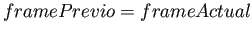

Siguiente: Umbral Binario Subir: Detección de la región Anterior: Detección de la región Índice General
El resultado de la operación es una imagen  (Fig. 3.4c) en la que se observa la parte que ha cambiado de una imagen a otra. Cabe aclarar que se utiliza el valor absoluto de la diferencia, ya que usar la resta produce resultados fuera del rango de valores que se utilizan en las imágenes.
(Fig. 3.4c) en la que se observa la parte que ha cambiado de una imagen a otra. Cabe aclarar que se utiliza el valor absoluto de la diferencia, ya que usar la resta produce resultados fuera del rango de valores que se utilizan en las imágenes.
Si bien se utiliza la ecuación (3.2) para la diferencia de imágenes, el ``frame anterior'' no representa siempre el previo al actual procesado (nótese la asignación dentro del condicional  en la Fig. 3.2). Es decir que la diferencia, se hace entre el fotograma actual y el último en el que se detectó movimiento. Esta decisión, se ve fundamentada en el hecho que la diferencia entre frames sucesivos, donde el desplazamiento es muy pequeño, genera información espuria. Cabe agregar que ésto también beneficia al tiempo promedio de operación del sistema, ya que se ignora el cómputo de frames irrelevantes para la aplicación.
Como se puede observar en la Fig. 3.4c, existe presencia de ruido y ``patrones speckle'' en partes de la imagen donde no hay movimiento. Estos efectos indeseados, se tratarán de eliminar mediante una combinación de técnicas que se describen a continuación.